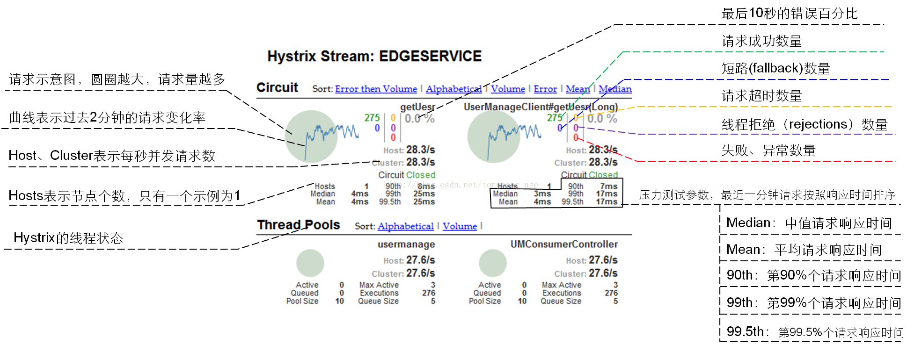

<!DOCTYPE html>
<html lang="en">
<head><meta name="generator" content="Hexo 3.8.0">
    <meta charset="utf-8">
    
    <title>
        Hystrix总结 |
        
        YingLong</title>
    
    
        <meta name="keywords" content="Hystrix，限流，熔断，降级">
    
    <meta name="viewport" content="width=device-width, initial-scale=1, maximum-scale=1">
    <meta name="description" content="在项目中需要对某些接口进行限流和熔断处理，防止由于某些接口资源消耗过大影响到整个的所有接口，防止单独的依赖耗尽资源；对一些依赖服务进行隔离，防止当依赖服务不可用或者响应非常缓慢导致整个应用不可用，阻止故障的连锁反应。过载立即切断并快速失败防止排队。  Hystrix有4种参数配置，优先级由低到高分别为：内置全局默认值、动态全局默认属性、内置实例默认值、动态配置实例属性。 基于编程式基于编程式使用H">
<meta name="keywords" content="Hystrix，限流，熔断，降级">
<meta property="og:type" content="article">
<meta property="og:title" content="Hystrix总结">
<meta property="og:url" content="https://yaoyinglong.github.io/Blog/框架/Spring/Hystrix总结/index.html">
<meta property="og:site_name" content="YingLong">
<meta property="og:description" content="在项目中需要对某些接口进行限流和熔断处理，防止由于某些接口资源消耗过大影响到整个的所有接口，防止单独的依赖耗尽资源；对一些依赖服务进行隔离，防止当依赖服务不可用或者响应非常缓慢导致整个应用不可用，阻止故障的连锁反应。过载立即切断并快速失败防止排队。  Hystrix有4种参数配置，优先级由低到高分别为：内置全局默认值、动态全局默认属性、内置实例默认值、动态配置实例属性。 基于编程式基于编程式使用H">
<meta property="og:locale" content="en">
<meta property="og:image" content="https://yaoyinglong.github.io/images/框架/hystrix-command-flow-chart.png">
<meta property="og:image" content="https://yaoyinglong.github.io/images/框架/hystrix-dashboard-参数说明.png">
<meta property="og:updated_time" content="2020-06-19T01:57:12.125Z">
<meta name="twitter:card" content="summary">
<meta name="twitter:title" content="Hystrix总结">
<meta name="twitter:description" content="在项目中需要对某些接口进行限流和熔断处理，防止由于某些接口资源消耗过大影响到整个的所有接口，防止单独的依赖耗尽资源；对一些依赖服务进行隔离，防止当依赖服务不可用或者响应非常缓慢导致整个应用不可用，阻止故障的连锁反应。过载立即切断并快速失败防止排队。  Hystrix有4种参数配置，优先级由低到高分别为：内置全局默认值、动态全局默认属性、内置实例默认值、动态配置实例属性。 基于编程式基于编程式使用H">
<meta name="twitter:image" content="https://yaoyinglong.github.io/images/框架/hystrix-command-flow-chart.png">
    

    

    
        <link rel="icon" href="/favicon.ico">
    

    <link rel="stylesheet" href="/libs/font-awesome/css/font-awesome.min.css">
    <link rel="stylesheet" href="/libs/open-sans/styles.css">
    <link rel="stylesheet" href="/libs/source-code-pro/styles.css">

    <link rel="stylesheet" href="/css/style.css">
    <script src="/libs/jquery/2.1.3/jquery.min.js"></script>
    <script src="/libs/jquery/plugins/cookie/1.4.1/jquery.cookie.js"></script>
    
    
        <link rel="stylesheet" href="/libs/lightgallery/css/lightgallery.min.css">
    
    
        <link rel="stylesheet" href="/libs/justified-gallery/justifiedGallery.min.css">
    
    
    
    


</head>
</html>
<body>
<div id="container">
    <header id="header">
    <div id="header-main" class="header-inner">
        <div class="outer">
            <a href="/" id="logo">
                <i class="logo"></i>
                <span class="site-title">YingLong</span>
            </a>
            <nav id="main-nav">
                
                    <a class="main-nav-link" href="/">Home</a>
                
                    <a class="main-nav-link" href="/archives">Archives</a>
                
                    <a class="main-nav-link" href="/categories">Categories</a>
                
                    <a class="main-nav-link" href="/tags">Tags</a>
                
                    <a class="main-nav-link" href="/about">About</a>
                
            </nav>
            
            <div id="search-form-wrap">
    
        <form class="search-form">
            <input type="text" class="ins-search-input search-form-input" placeholder="Search">
            <button type="submit" class="search-form-submit"></button>
        </form>
        <div class="ins-search">
    <div class="ins-search-mask"></div>
    <div class="ins-search-container">
        <div class="ins-input-wrapper">
            <input type="text" class="ins-search-input" placeholder="Type something...">
            <span class="ins-close ins-selectable"><i class="fa fa-times-circle"></i></span>
        </div>
        <div class="ins-section-wrapper">
            <div class="ins-section-container"></div>
        </div>
    </div>
</div>
<script>
    (function (window) {
        var INSIGHT_CONFIG = {
            TRANSLATION: {
                POSTS: 'Posts',
                PAGES: 'Pages',
                CATEGORIES: 'Categories',
                TAGS: 'Tags',
                UNTITLED: '(Untitled)',
            },
            ROOT_URL: '/',
            CONTENT_URL: '/content.json',
        };
        window.INSIGHT_CONFIG = INSIGHT_CONFIG;
    })(window);
</script>
<script src="/js/insight.js"></script>
    
</div>
        </div>
    </div>
    <div id="main-nav-mobile" class="header-sub header-inner">
        <table class="menu outer">
            <tr>
                
                    <td><a class="main-nav-link" href="/">Home</a></td>
                
                    <td><a class="main-nav-link" href="/archives">Archives</a></td>
                
                    <td><a class="main-nav-link" href="/categories">Categories</a></td>
                
                    <td><a class="main-nav-link" href="/tags">Tags</a></td>
                
                    <td><a class="main-nav-link" href="/about">About</a></td>
                
                <td>
                    
    <div class="search-form">
        <input type="text" class="ins-search-input search-form-input" placeholder="Search">
    </div>

                </td>
            </tr>
        </table>
    </div>
</header>

    <div class="outer">
        
        
            <aside id="sidebar">
    
        
    <div class="widget-wrap" id="categories">
        <h3 class="widget-title">
            <span>categories</span>
            &nbsp;
            <a id="allExpand" href="#">
                <i class="fa fa-angle-double-down fa-2x"></i>
            </a>
        </h3>

        
        
        
            <ul class="unstyled" id="tree">
                
                    <li class="directory">
                        <a href="#" data-role="directory">
                            <i class="fa fa-folder"></i>
                            &nbsp;
                            DB
                        </a>
                        
            <ul class="unstyled" id="tree">
                
                    <li class="file"><a href="/Blog/DB/MySQL/">MySQL常用总结</a></li>
                
            </ul>
        
                    </li>
                
                    <li class="directory">
                        <a href="#" data-role="directory">
                            <i class="fa fa-folder"></i>
                            &nbsp;
                            Git
                        </a>
                        
            <ul class="unstyled" id="tree">
                
                    <li class="file"><a href="/Blog/Git/GIt基本概念/">Git基本概念</a></li>
                
                    <li class="file"><a href="/Blog/Git/GIt常用命令/">Git常用命令</a></li>
                
                    <li class="file"><a href="/Blog/Git/分支管理理解/">分支管理理解</a></li>
                
            </ul>
        
                    </li>
                
                    <li class="directory">
                        <a href="#" data-role="directory">
                            <i class="fa fa-folder"></i>
                            &nbsp;
                            Go
                        </a>
                        
            <ul class="unstyled" id="tree">
                
                    <li class="file"><a href="/Blog/Go/Go基础/">Go基础</a></li>
                
            </ul>
        
                    </li>
                
                    <li class="directory">
                        <a href="#" data-role="directory">
                            <i class="fa fa-folder"></i>
                            &nbsp;
                            Java
                        </a>
                        
            <ul class="unstyled" id="tree">
                
                    <li class="directory">
                        <a href="#" data-role="directory">
                            <i class="fa fa-folder"></i>
                            &nbsp;
                            VM
                        </a>
                        
            <ul class="unstyled" id="tree">
                
                    <li class="file"><a href="/Blog/Java/VM/HotSpot收集算法实现/">HotSpot收集算法实现</a></li>
                
                    <li class="file"><a href="/Blog/Java/VM/JVM内存池/">JVM内存池</a></li>
                
                    <li class="file"><a href="/Blog/Java/VM/Java内存区域/">Java内存区域</a></li>
                
                    <li class="file"><a href="/Blog/Java/VM/Minor&Major&Full GC/">Minor&Major&Full GC</a></li>
                
                    <li class="file"><a href="/Blog/Java/VM/OutOfMemoryError异常/">OOM异常实验</a></li>
                
                    <li class="file"><a href="/Blog/Java/VM/内存非配与回收策略/">内存分配与回收策略</a></li>
                
                    <li class="file"><a href="/Blog/Java/VM/垃圾收集算法/">垃圾收集算法</a></li>
                
                    <li class="file"><a href="/Blog/Java/VM/堆中对象分配&布局&访问/">堆中对象分配&布局&访问</a></li>
                
                    <li class="file"><a href="/Blog/Java/VM/对象是否存活/">对象是否存活</a></li>
                
                    <li class="file"><a href="/Blog/Java/VM/类加载的时机/">类加载的时机</a></li>
                
                    <li class="file"><a href="/Blog/Java/VM/运行时栈帧结构/">运行时栈帧结构</a></li>
                
                    <li class="file"><a href="/Blog/Java/VM/垃圾收集器/">垃圾收集器</a></li>
                
                    <li class="file"><a href="/Blog/Java/VM/字节码指令/">字节码指令</a></li>
                
                    <li class="file"><a href="/Blog/Java/VM/方法调用/">方法调用</a></li>
                
                    <li class="file"><a href="/Blog/Java/VM/理解GC日志/">理解GC日志</a></li>
                
                    <li class="file"><a href="/Blog/Java/VM/类加载器/">类加载器</a></li>
                
                    <li class="file"><a href="/Blog/Java/VM/Class文件结构/">Class文件结构</a></li>
                
                    <li class="file"><a href="/Blog/Java/VM/属性表集合/">属性表集合</a></li>
                
                    <li class="file"><a href="/Blog/Java/VM/类加载过程/">类加载过程</a></li>
                
            </ul>
        
                    </li>
                
                    <li class="directory">
                        <a href="#" data-role="directory">
                            <i class="fa fa-folder"></i>
                            &nbsp;
                            基础
                        </a>
                        
            <ul class="unstyled" id="tree">
                
                    <li class="file"><a href="/Blog/Java/基础/lambda常用总结/">lambda常用总结</a></li>
                
                    <li class="file"><a href="/Blog/Java/基础/时间及日期总结/">Java8时间及日期</a></li>
                
            </ul>
        
                    </li>
                
                    <li class="directory">
                        <a href="#" data-role="directory">
                            <i class="fa fa-folder"></i>
                            &nbsp;
                            多线程
                        </a>
                        
            <ul class="unstyled" id="tree">
                
                    <li class="file"><a href="/Blog/Java/多线程/原子性、可见性、有序性/">原子性、可见性、有序性</a></li>
                
                    <li class="file"><a href="/Blog/Java/多线程/线程安全/">线程安全</a></li>
                
                    <li class="file"><a href="/Blog/Java/多线程/线程安全实现方式/">线程安全实现方式</a></li>
                
            </ul>
        
                    </li>
                
                    <li class="directory">
                        <a href="#" data-role="directory">
                            <i class="fa fa-folder"></i>
                            &nbsp;
                            工具
                        </a>
                        
            <ul class="unstyled" id="tree">
                
                    <li class="file"><a href="/Blog/Java/工具/Java中调用Groovy脚本/">Java中调用Groovy脚本</a></li>
                
                    <li class="file"><a href="/Blog/Java/工具/国密SM2/">国密SM2</a></li>
                
                    <li class="file"><a href="/Blog/Java/工具/国密SM4/">国密SM4</a></li>
                
            </ul>
        
                    </li>
                
            </ul>
        
                    </li>
                
                    <li class="directory">
                        <a href="#" data-role="directory">
                            <i class="fa fa-folder"></i>
                            &nbsp;
                            Linux
                        </a>
                        
            <ul class="unstyled" id="tree">
                
                    <li class="file"><a href="/Blog/Linux/Linux常用命令/">Linux常用命令</a></li>
                
                    <li class="file"><a href="/Blog/Linux/Linux常用技巧/">Linux常用技巧</a></li>
                
            </ul>
        
                    </li>
                
                    <li class="directory">
                        <a href="#" data-role="directory">
                            <i class="fa fa-folder"></i>
                            &nbsp;
                            Maven
                        </a>
                        
            <ul class="unstyled" id="tree">
                
                    <li class="file"><a href="/Blog/Maven/Maven加密JAR包/">Maven加密JAR包</a></li>
                
                    <li class="file"><a href="/Blog/Maven/Maven基础/">Maven基础</a></li>
                
                    <li class="file"><a href="/Blog/Maven/Maven属性/">Maven属性</a></li>
                
                    <li class="file"><a href="/Blog/Maven/Maven常用/">Maven常用</a></li>
                
                    <li class="file"><a href="/Blog/Maven/Maven常用工具/">Maven常用工具</a></li>
                
                    <li class="file"><a href="/Blog/Maven/Maven生命周期/">Maven生命周期</a></li>
                
                    <li class="file"><a href="/Blog/Maven/Maven插件编写/">Maven插件编写</a></li>
                
                    <li class="file"><a href="/Blog/Maven/Maven个性化打包/">Maven个性化打包</a></li>
                
                    <li class="file"><a href="/Blog/Maven/Maven仓库/">Maven仓库</a></li>
                
                    <li class="file"><a href="/Blog/Maven/Maven常用插件/">Maven常用插件</a></li>
                
                    <li class="file"><a href="/Blog/Maven/Maven插件基础/">Maven插件基础</a></li>
                
                    <li class="file"><a href="/Blog/Maven/Maven聚合与继承/">Maven聚合与继承</a></li>
                
                    <li class="file"><a href="/Blog/Maven/Maven标签全解/">Maven标签全解</a></li>
                
                    <li class="file"><a href="/Blog/Maven/Maven Assembly标签全解/">Maven Assembly标签全解</a></li>
                
            </ul>
        
                    </li>
                
                    <li class="directory">
                        <a href="#" data-role="directory">
                            <i class="fa fa-folder"></i>
                            &nbsp;
                            Python
                        </a>
                        
            <ul class="unstyled" id="tree">
                
                    <li class="file"><a href="/Blog/Python/Excel文件数据抽取/">Excel文件数据抽取</a></li>
                
            </ul>
        
                    </li>
                
                    <li class="directory">
                        <a href="#" data-role="directory">
                            <i class="fa fa-folder"></i>
                            &nbsp;
                            Test
                        </a>
                        
            <ul class="unstyled" id="tree">
                
                    <li class="file"><a href="/Blog/Test/IT测试总结/">IT测试总结</a></li>
                
                    <li class="file"><a href="/Blog/Test/JMeter日常总结/">JMeter日常总结</a></li>
                
                    <li class="file"><a href="/Blog/Test/LoadRunner日常总结/">LoadRunner日常总结</a></li>
                
                    <li class="file"><a href="/Blog/Test/UT测试总结/">UT测试总结</a></li>
                
            </ul>
        
                    </li>
                
                    <li class="directory">
                        <a href="#" data-role="directory">
                            <i class="fa fa-folder"></i>
                            &nbsp;
                            协议族
                        </a>
                        
            <ul class="unstyled" id="tree">
                
                    <li class="file"><a href="/Blog/协议族/TCPIP四层&五层模型/">TCP/IP四层&五层模型</a></li>
                
                    <li class="file"><a href="/Blog/协议族/网络基础知识/">网络基础知识</a></li>
                
                    <li class="file"><a href="/Blog/协议族/地址解析协议/">地址解析协议ARP</a></li>
                
                    <li class="file"><a href="/Blog/协议族/以太网/">以太网</a></li>
                
            </ul>
        
                    </li>
                
                    <li class="directory">
                        <a href="#" data-role="directory">
                            <i class="fa fa-folder"></i>
                            &nbsp;
                            杂记
                        </a>
                        
            <ul class="unstyled" id="tree">
                
                    <li class="file"><a href="/Blog/杂记/IDEA实用插件/">IDEA实用插件</a></li>
                
                    <li class="file"><a href="/Blog/杂记/IDEA快捷的使用/">IDEA的快捷使用</a></li>
                
                    <li class="file"><a href="/Blog/杂记/Win实用工具/">Win实用工具</a></li>
                
                    <li class="file"><a href="/Blog/杂记/JAVA实用工具/">JAVA实用工具</a></li>
                
                    <li class="file"><a href="/Blog/杂记/XSD使用总结/">XSD实用总结</a></li>
                
                    <li class="file"><a href="/Blog/杂记/SonarQube配置总结/">SonarQube配置总结</a></li>
                
            </ul>
        
                    </li>
                
                    <li class="directory open">
                        <a href="#" data-role="directory">
                            <i class="fa fa-folder-open"></i>
                            &nbsp;
                            框架
                        </a>
                        
            <ul class="unstyled" id="tree">
                
                    <li class="directory open">
                        <a href="#" data-role="directory">
                            <i class="fa fa-folder-open"></i>
                            &nbsp;
                            Spring
                        </a>
                        
            <ul class="unstyled" id="tree">
                
                    <li class="file"><a href="/Blog/框架/Spring/Spring Gzip压缩/">Spring Gzip压缩</a></li>
                
                    <li class="file"><a href="/Blog/框架/Spring/Spring线程池跨线程数据共享/">Spring线程池跨线程数据共享</a></li>
                
                    <li class="file active"><a href="/Blog/框架/Spring/Hystrix总结/">Hystrix总结</a></li>
                
                    <li class="file"><a href="/Blog/框架/Spring/SpringMvc异步/">SpringMvc异步原理及实现</a></li>
                
            </ul>
        
                    </li>
                
                    <li class="directory">
                        <a href="#" data-role="directory">
                            <i class="fa fa-folder"></i>
                            &nbsp;
                            常见问题
                        </a>
                        
            <ul class="unstyled" id="tree">
                
                    <li class="file"><a href="/Blog/框架/常见问题/HBase依赖冲突/">HBase依赖冲突</a></li>
                
                    <li class="file"><a href="/Blog/框架/常见问题/Maven编译后文件损坏/">Maven编译后文件损坏</a></li>
                
            </ul>
        
                    </li>
                
                    <li class="file"><a href="/Blog/框架/Redis分布式锁实现/">Redis分布式锁实现</a></li>
                
                    <li class="file"><a href="/Blog/框架/Tomcat工作原理/">Tomcat工作原理</a></li>
                
            </ul>
        
                    </li>
                
                    <li class="directory">
                        <a href="#" data-role="directory">
                            <i class="fa fa-folder"></i>
                            &nbsp;
                            算法
                        </a>
                        
            <ul class="unstyled" id="tree">
                
                    <li class="directory">
                        <a href="#" data-role="directory">
                            <i class="fa fa-folder"></i>
                            &nbsp;
                            排序
                        </a>
                        
            <ul class="unstyled" id="tree">
                
                    <li class="file"><a href="/Blog/算法/排序/冒泡排序/">冒泡排序</a></li>
                
            </ul>
        
                    </li>
                
            </ul>
        
                    </li>
                
                    <li class="directory">
                        <a href="#" data-role="directory">
                            <i class="fa fa-folder"></i>
                            &nbsp;
                            设计模式
                        </a>
                        
            <ul class="unstyled" id="tree">
                
                    <li class="file"><a href="/Blog/设计模式/设计基本原则/">设计基本原则</a></li>
                
            </ul>
        
                    </li>
                
                    <li class="file"><a href="/Blog/index/">Welcome YingLong's Blog</a></li>
                
            </ul>
        
    </div>
    <script>
        $(document).ready(function () {
            var iconFolderOpenClass = 'fa-folder-open';
            var iconFolderCloseClass = 'fa-folder';
            var iconAllExpandClass = 'fa-angle-double-down';
            var iconAllPackClass = 'fa-angle-double-up';
            // Handle directory-tree expansion:
            // 左键单独展开目录
            $(document).on('click', '#categories a[data-role="directory"]', function (event) {
                event.preventDefault();

                var icon = $(this).children('.fa');
                var expanded = icon.hasClass(iconFolderOpenClass);
                var subtree = $(this).siblings('ul');
                icon.removeClass(iconFolderOpenClass).removeClass(iconFolderCloseClass);
                if (expanded) {
                    if (typeof subtree != 'undefined') {
                        subtree.slideUp({duration: 100});
                    }
                    icon.addClass(iconFolderCloseClass);
                } else {
                    if (typeof subtree != 'undefined') {
                        subtree.slideDown({duration: 100});
                    }
                    icon.addClass(iconFolderOpenClass);
                }
            });
            // 右键展开下属所有目录
            $('#categories a[data-role="directory"]').bind("contextmenu", function (event) {
                event.preventDefault();

                var icon = $(this).children('.fa');
                var expanded = icon.hasClass(iconFolderOpenClass);
                var listNode = $(this).siblings('ul');
                var subtrees = $.merge(listNode.find('li ul'), listNode);
                var icons = $.merge(listNode.find('.fa'), icon);
                icons.removeClass(iconFolderOpenClass).removeClass(iconFolderCloseClass);
                if (expanded) {
                    subtrees.slideUp({duration: 100});
                    icons.addClass(iconFolderCloseClass);
                } else {
                    subtrees.slideDown({duration: 100});
                    icons.addClass(iconFolderOpenClass);
                }
            })
            // 展开关闭所有目录按钮
            $(document).on('click', '#allExpand', function (event) {
                event.preventDefault();

                var icon = $(this).children('.fa');
                var expanded = icon.hasClass(iconAllExpandClass);
                icon.removeClass(iconAllExpandClass).removeClass(iconAllPackClass);
                if (expanded) {
                    $('#sidebar .fa.fa-folder').removeClass('fa-folder').addClass('fa-folder-open')
                    $('#categories li ul').slideDown({duration: 100});
                    icon.addClass(iconAllPackClass);
                } else {
                    $('#sidebar .fa.fa-folder-open').removeClass('fa-folder-open').addClass('fa-folder')
                    $('#categories li ul').slideUp({duration: 100});
                    icon.addClass(iconAllExpandClass);
                }
            });
        });
    </script>

    
    <div id="toTop" class="fa fa-angle-up"></div>
</aside>
        
        <section id="main"><article id="post-框架/Spring/Hystrix总结" class="article article-type-post" itemscope itemprop="blogPost">
    <div class="article-inner">
        
        
            <header class="article-header">
                
                    <div class="article-meta">
                        
    <div class="article-category">
        <i class="fa fa-folder"></i>
        <a class="article-category-link" href="/categories/框架/">框架</a><i class="fa fa-angle-right"></i><a class="article-category-link" href="/categories/框架/Spring/">Spring</a>
    </div>

                        
    <div class="article-tag">
        <i class="fa fa-tag"></i>
        <a class="tag-link" href="/tags/Hystrix，限流，熔断，降级/">Hystrix，限流，熔断，降级</a>
    </div>

                        
    <div class="article-date">
        <i class="fa fa-calendar"></i>
        <a href="/Blog/框架/Spring/Hystrix总结/">
            <time datetime="2019-05-25T16:00:00.000Z" itemprop="datePublished">2019-05-26</time>
        </a>
    </div>


                        
                    </div>
                
                
    
        <h1 class="article-title" itemprop="name">
            Hystrix总结
        </h1>
    

            </header>
        
        
        <div class="article-entry" itemprop="articleBody">
            
            
                    
            
            
                <p>在项目中需要对某些接口进行限流和熔断处理，防止由于某些接口资源消耗过大影响到整个的所有接口，防止单独的依赖耗尽资源；对一些依赖服务进行隔离，防止当依赖服务不可用或者响应非常缓慢导致整个应用不可用，阻止故障的连锁反应。过载立即切断并快速失败防止排队。</p>
<p></p>
<p><strong><code>Hystrix</code></strong>有4种参数配置，优先级由低到高分别为：<strong>内置全局默认值</strong>、<strong>动态全局默认属性</strong>、<strong>内置实例默认值</strong>、<strong>动态配置实例属性</strong>。</p>
<h3 id="基于编程式"><a href="#基于编程式" class="headerlink" title="基于编程式"></a>基于编程式</h3><p>基于编程式使用<strong><code>Hystrix</code></strong>，只需继承<strong><code>HystrixCommand</code></strong>或<strong><code>HystrixObservableCommand</code></strong>，区别在于<strong><code>HystrixCommand</code></strong>命令逻辑卸载<strong><code>run()</code></strong>方法中，且由新创建线程执行，一个实例只能向调用程序发送单条数据。<strong><code>HystrixObservableCommand</code></strong>命令逻辑写在<strong><code>construct()</code></strong>方法中，由调用程序线程执行，一个实例可以顺序发送多条数据。</p>
<p><strong><code>HystrixCommand</code></strong>命令有<strong><code>execute()</code></strong>、<strong><code>queue()</code></strong>、<strong><code>observe()</code></strong>、t<strong><code>oObservable()</code></strong>4个方法来触发执行<strong><code>run()</code></strong>方法。<strong><code>HystrixObservableCommand</code></strong>命令只有<strong><code>observe()</code></strong>、t<strong><code>oObservable()</code></strong>2个方法来触发执行<strong><code>construct()</code></strong>方法。</p>
<ul>
<li><strong><code>execute()</code></strong> 以<strong>同步堵塞</strong>方式执行</li>
<li><strong><code>queue()</code></strong> 以<strong>异步非堵塞</strong>方式执行，通过<strong><code>Future.get()</code></strong>获取<strong><code>run()</code></strong>返回结果</li>
<li><strong><code>observe()</code></strong> <strong>事件注册前</strong>执行<strong><code>run()</code></strong>或<strong><code>construct()</code></strong>方法</li>
<li><strong><code>toObservable()</code></strong> <strong>事件注册后</strong>执行<strong><code>run()</code></strong>或<strong><code>construct()</code></strong>方法</li>
</ul>
<p>继承<strong><code>HystrixCommand</code></strong>实现自己的<strong><code>Command</code></strong>，在构造方法中配置需要的参数，后续章节对具体配置进行详细描述。</p>
<figure class="highlight java"><table><tr><td class="gutter"><pre><span class="line">1</span><br><span class="line">2</span><br><span class="line">3</span><br><span class="line">4</span><br><span class="line">5</span><br><span class="line">6</span><br><span class="line">7</span><br><span class="line">8</span><br><span class="line">9</span><br><span class="line">10</span><br><span class="line">11</span><br><span class="line">12</span><br><span class="line">13</span><br><span class="line">14</span><br><span class="line">15</span><br><span class="line">16</span><br><span class="line">17</span><br><span class="line">18</span><br><span class="line">19</span><br><span class="line">20</span><br><span class="line">21</span><br><span class="line">22</span><br><span class="line">23</span><br><span class="line">24</span><br><span class="line">25</span><br><span class="line">26</span><br><span class="line">27</span><br><span class="line">28</span><br><span class="line">29</span><br><span class="line">30</span><br><span class="line">31</span><br><span class="line">32</span><br><span class="line">33</span><br></pre></td><td class="code"><pre><span class="line"><span class="keyword">public</span> <span class="class"><span class="keyword">class</span> <span class="title">HelloWorldCommand</span> <span class="keyword">extends</span> <span class="title">HystrixCommand</span>&lt;<span class="title">JSONObject</span>&gt; </span>&#123;</span><br><span class="line"></span><br><span class="line">    <span class="keyword">private</span> DataRequest request;</span><br><span class="line"></span><br><span class="line">    <span class="function"><span class="keyword">protected</span> <span class="title">HelloWorldCommand</span><span class="params">(DataRequest request)</span> </span>&#123;</span><br><span class="line">        HystrixCommandProperties.Setter propertiesSetter = HystrixCommandProperties.Setter()</span><br><span class="line">                .withCircuitBreakerEnabled(<span class="keyword">true</span>)</span><br><span class="line">                .withRequestCacheEnabled(<span class="keyword">false</span>)</span><br><span class="line">                .withRequestLogEnabled(<span class="keyword">false</span>)</span><br><span class="line">                .withExecutionIsolationStrategy()</span><br><span class="line">                .withExecutionIsolationSemaphoreMaxConcurrentRequests(<span class="number">80</span>)</span><br><span class="line">                .withFallbackIsolationSemaphoreMaxConcurrentRequests(<span class="number">80</span>)</span><br><span class="line">                .withCircuitBreakerRequestVolumeThreshold(<span class="number">30</span>)</span><br><span class="line">                .withCircuitBreakerSleepWindowInMilliseconds(<span class="number">5000</span>)</span><br><span class="line">                .withExecutionTimeoutInMilliseconds(timeOut);</span><br><span class="line">        </span><br><span class="line">        HystrixCommandGroupKey groupKey = HystrixCommandGroupKey.Factory.asKey(<span class="string">"requestData"</span>);</span><br><span class="line">        HystrixCommand.Setter setter = HystrixCommand.Setter.withGroupKey(groupKey)</span><br><span class="line">                .andCommandKey(HystrixCommandKey.Factory.asKey(<span class="string">"data-"</span>+ Id))</span><br><span class="line">                .andCommandPropertiesDefaults(propertiesSetter)</span><br><span class="line">                .andThreadPoolKey(HystrixThreadPoolKey.Factory.asKey(<span class="string">"requestData"</span>));</span><br><span class="line">        <span class="keyword">super</span>(setter);</span><br><span class="line">        <span class="keyword">this</span>.request = request;</span><br><span class="line">    &#125;</span><br><span class="line"></span><br><span class="line">    <span class="meta">@Override</span></span><br><span class="line">    <span class="function"><span class="keyword">protected</span> JSONObject <span class="title">run</span><span class="params">()</span>  </span>&#123;</span><br><span class="line">        <span class="keyword">return</span> request.executeRequest();</span><br><span class="line">    &#125;</span><br><span class="line">    </span><br><span class="line">    <span class="meta">@Override</span></span><br><span class="line">    <span class="function"><span class="keyword">protected</span> JSONObject <span class="title">getFallback</span><span class="params">()</span> </span>&#123;&#125;</span><br><span class="line">&#125;</span><br></pre></td></tr></table></figure>
<p>调用<strong><code>HystrixCommand</code></strong>的执行方法发起实际请求，<strong><code>execute()</code></strong>方法同步调用：</p>
<figure class="highlight java"><table><tr><td class="gutter"><pre><span class="line">1</span><br><span class="line">2</span><br></pre></td><td class="code"><pre><span class="line">HelloWorldCommand command = <span class="keyword">new</span> HelloWorldCommand(request);</span><br><span class="line">JSONObject result = command.execute();</span><br></pre></td></tr></table></figure>
<p><strong><code>queue()</code></strong>方法异步调用：</p>
<figure class="highlight java"><table><tr><td class="gutter"><pre><span class="line">1</span><br><span class="line">2</span><br><span class="line">3</span><br></pre></td><td class="code"><pre><span class="line">HelloWorldCommand command = <span class="keyword">new</span> HelloWorldCommand(request);</span><br><span class="line">Future&lt;JSONObject&gt; future = command.queue();</span><br><span class="line">JSONObject result = future.get(<span class="number">10000</span>, TimeUnit.MILLISECONDS);</span><br></pre></td></tr></table></figure>
<p><strong><code>observe()</code></strong>方法，注册观察者事件订阅，事件注册前执行：</p>
<figure class="highlight java"><table><tr><td class="gutter"><pre><span class="line">1</span><br><span class="line">2</span><br></pre></td><td class="code"><pre><span class="line">Observable&lt;JSONObject&gt; observable = <span class="keyword">new</span> HelloWorldCommand(request).observe();</span><br><span class="line">observable.subscribe(result1 -&gt; System.out.println(<span class="string">"Observable call--&gt; "</span> + result1));</span><br></pre></td></tr></table></figure>
<p><strong><code>observe()</code></strong>方法，注册完整执行生命周期事件，事件注册前执行：</p>
<figure class="highlight java"><table><tr><td class="gutter"><pre><span class="line">1</span><br><span class="line">2</span><br><span class="line">3</span><br><span class="line">4</span><br><span class="line">5</span><br><span class="line">6</span><br><span class="line">7</span><br><span class="line">8</span><br><span class="line">9</span><br><span class="line">10</span><br><span class="line">11</span><br><span class="line">12</span><br><span class="line">13</span><br><span class="line">14</span><br></pre></td><td class="code"><pre><span class="line">Observable&lt;JSONObject&gt; observable = <span class="keyword">new</span> HelloWorldCommand(request).observe();</span><br><span class="line">observable.subscribe(<span class="keyword">new</span> Observer&lt;JSONObject&gt;() &#123;</span><br><span class="line">    <span class="comment">//onNext/onError完成之后最后回调</span></span><br><span class="line">    <span class="meta">@Override</span></span><br><span class="line">    <span class="function"><span class="keyword">public</span> <span class="keyword">void</span> <span class="title">onCompleted</span><span class="params">()</span> </span>&#123;&#125;</span><br><span class="line"></span><br><span class="line">    <span class="comment">// 当产生异常时回调</span></span><br><span class="line">    <span class="meta">@Override</span></span><br><span class="line">    <span class="function"><span class="keyword">public</span> <span class="keyword">void</span> <span class="title">onError</span><span class="params">(Throwable throwable)</span> </span>&#123;&#125;</span><br><span class="line"></span><br><span class="line">    <span class="comment">// 获取结果后回调</span></span><br><span class="line">    <span class="meta">@Override</span></span><br><span class="line">    <span class="function"><span class="keyword">public</span> <span class="keyword">void</span> <span class="title">onNext</span><span class="params">(JSONObject s)</span> </span>&#123;&#125;</span><br><span class="line">&#125;);</span><br></pre></td></tr></table></figure>
<p><strong><code>toObservable()</code></strong>方法，注册观察者事件订阅，事件注册后执行：</p>
<figure class="highlight java"><table><tr><td class="gutter"><pre><span class="line">1</span><br><span class="line">2</span><br><span class="line">3</span><br><span class="line">4</span><br><span class="line">5</span><br><span class="line">6</span><br><span class="line">7</span><br><span class="line">8</span><br><span class="line">9</span><br><span class="line">10</span><br><span class="line">11</span><br><span class="line">12</span><br><span class="line">13</span><br><span class="line">14</span><br></pre></td><td class="code"><pre><span class="line">Observable&lt;JSONObject&gt; toObservable = <span class="keyword">new</span> HelloWorldCommand(request).toObservable();</span><br><span class="line">toObservable.subscribe(<span class="keyword">new</span> Observer&lt;JSONObject&gt;() &#123;</span><br><span class="line">    <span class="comment">//onNext/onError完成之后最后回调</span></span><br><span class="line">    <span class="meta">@Override</span></span><br><span class="line">    <span class="function"><span class="keyword">public</span> <span class="keyword">void</span> <span class="title">onCompleted</span><span class="params">()</span> </span>&#123;&#125;</span><br><span class="line"></span><br><span class="line">    <span class="comment">// 当产生异常时回调</span></span><br><span class="line">    <span class="meta">@Override</span></span><br><span class="line">    <span class="function"><span class="keyword">public</span> <span class="keyword">void</span> <span class="title">onError</span><span class="params">(Throwable throwable)</span> </span>&#123;&#125;</span><br><span class="line"></span><br><span class="line">    <span class="comment">// 获取结果后回调</span></span><br><span class="line">    <span class="meta">@Override</span></span><br><span class="line">    <span class="function"><span class="keyword">public</span> <span class="keyword">void</span> <span class="title">onNext</span><span class="params">(JSONObject s)</span> </span>&#123;&#125;</span><br><span class="line">&#125;);</span><br></pre></td></tr></table></figure>
<h3 id="基于注解式"><a href="#基于注解式" class="headerlink" title="基于注解式"></a>基于注解式</h3><p>注解使用方式和编程式大致相同，只是属性参数配置都注解化了。三个核心注解分别为<strong><code>@HystrixCommand</code></strong>、<strong><code>@HystrixProperty</code></strong>和<strong><code>@HystrixCollapser</code></strong>。</p>
<p>注解同步执行：</p>
<figure class="highlight java"><table><tr><td class="gutter"><pre><span class="line">1</span><br><span class="line">2</span><br><span class="line">3</span><br><span class="line">4</span><br><span class="line">5</span><br><span class="line">6</span><br><span class="line">7</span><br><span class="line">8</span><br><span class="line">9</span><br><span class="line">10</span><br><span class="line">11</span><br><span class="line">12</span><br><span class="line">13</span><br><span class="line">14</span><br><span class="line">15</span><br></pre></td><td class="code"><pre><span class="line"><span class="keyword">public</span> <span class="class"><span class="keyword">class</span> <span class="title">HelloWorldHystrixAnnotation</span> </span>&#123;</span><br><span class="line">    </span><br><span class="line">    <span class="meta">@Autowired</span></span><br><span class="line">    <span class="keyword">private</span> DataClient dataClient;</span><br><span class="line">    </span><br><span class="line">    <span class="meta">@HystrixCommand</span>(groupKey = <span class="string">"helloWorldHystrixAnnotation"</span>,</span><br><span class="line">            commandKey = <span class="string">"helloWorldHystrixAnnotationSync"</span>, fallbackMethod = <span class="string">"fallback"</span>)</span><br><span class="line">    <span class="function"><span class="keyword">public</span> JSONObject <span class="title">executeRequest</span><span class="params">(String param)</span> </span>&#123;</span><br><span class="line">        <span class="keyword">return</span> dataClient.retrieveData(param);</span><br><span class="line">    &#125;</span><br><span class="line"></span><br><span class="line">    <span class="function"><span class="keyword">public</span> JSONObject <span class="title">fallback</span><span class="params">()</span> </span>&#123;</span><br><span class="line">        <span class="keyword">return</span> <span class="keyword">new</span> JSONObject();</span><br><span class="line">    &#125;</span><br><span class="line">&#125;</span><br></pre></td></tr></table></figure>
<p>注解异步执行：</p>
<figure class="highlight java"><table><tr><td class="gutter"><pre><span class="line">1</span><br><span class="line">2</span><br><span class="line">3</span><br><span class="line">4</span><br><span class="line">5</span><br><span class="line">6</span><br><span class="line">7</span><br><span class="line">8</span><br><span class="line">9</span><br><span class="line">10</span><br><span class="line">11</span><br><span class="line">12</span><br><span class="line">13</span><br><span class="line">14</span><br><span class="line">15</span><br><span class="line">16</span><br><span class="line">17</span><br><span class="line">18</span><br><span class="line">19</span><br><span class="line">20</span><br></pre></td><td class="code"><pre><span class="line"><span class="keyword">public</span> <span class="class"><span class="keyword">class</span> <span class="title">HelloWorldHystrixAnnotationAsync</span> </span>&#123;</span><br><span class="line"></span><br><span class="line">    <span class="meta">@Autowired</span></span><br><span class="line">    <span class="keyword">private</span> DataClient dataClient;</span><br><span class="line">    </span><br><span class="line">    <span class="meta">@HystrixCommand</span>(groupKey = <span class="string">"helloWorldHystrixAnnotation"</span>,</span><br><span class="line">            commandKey = <span class="string">"helloWorldHystrixAnnotationAsync"</span>, fallbackMethod = <span class="string">"fallback"</span>)</span><br><span class="line">    <span class="function"><span class="keyword">public</span> Future&lt;JSONObject&gt; <span class="title">run</span><span class="params">(String param)</span> </span>&#123;</span><br><span class="line">        <span class="keyword">return</span> <span class="keyword">new</span> AsyncResult&lt;JSONObject&gt;() &#123;</span><br><span class="line">            <span class="meta">@Override</span></span><br><span class="line">            <span class="function"><span class="keyword">public</span> JSONObject <span class="title">invoke</span><span class="params">()</span> </span>&#123;</span><br><span class="line">                <span class="keyword">return</span> dataClient.retrieveData(param);</span><br><span class="line">            &#125;</span><br><span class="line">        &#125;;</span><br><span class="line">    &#125;</span><br><span class="line">    </span><br><span class="line">    <span class="function"><span class="keyword">public</span> JSONObject <span class="title">fallback</span><span class="params">()</span> </span>&#123;</span><br><span class="line">        <span class="keyword">return</span> <span class="keyword">new</span> JSONObject();</span><br><span class="line">    &#125;</span><br><span class="line">&#125;</span><br></pre></td></tr></table></figure>
<p>注解订阅执行：</p>
<figure class="highlight java"><table><tr><td class="gutter"><pre><span class="line">1</span><br><span class="line">2</span><br><span class="line">3</span><br><span class="line">4</span><br><span class="line">5</span><br><span class="line">6</span><br><span class="line">7</span><br><span class="line">8</span><br><span class="line">9</span><br><span class="line">10</span><br><span class="line">11</span><br><span class="line">12</span><br><span class="line">13</span><br><span class="line">14</span><br><span class="line">15</span><br><span class="line">16</span><br><span class="line">17</span><br><span class="line">18</span><br><span class="line">19</span><br><span class="line">20</span><br><span class="line">21</span><br><span class="line">22</span><br><span class="line">23</span><br><span class="line">24</span><br></pre></td><td class="code"><pre><span class="line"><span class="keyword">public</span> <span class="class"><span class="keyword">class</span> <span class="title">HelloWorldHystrixAnnotationObervable</span> </span>&#123;</span><br><span class="line"></span><br><span class="line">    <span class="meta">@Autowired</span></span><br><span class="line">    <span class="keyword">private</span> DataClient dataClient;</span><br><span class="line">    </span><br><span class="line">    <span class="meta">@HystrixCommand</span>(groupKey = <span class="string">"helloWorldHystrixAnnotation"</span>,</span><br><span class="line">            commandKey = <span class="string">"helloWorldHystrixAnnotationObervable"</span>, fallbackMethod = <span class="string">"fallback"</span>)</span><br><span class="line">    <span class="function"><span class="keyword">public</span> Observable&lt;JSONObject&gt; <span class="title">run</span><span class="params">(String param)</span> </span>&#123;</span><br><span class="line">        <span class="keyword">return</span> Observable.create(subscriber -&gt; &#123;</span><br><span class="line">            <span class="keyword">try</span> &#123;</span><br><span class="line">                <span class="keyword">if</span> (!subscriber.isUnsubscribed()) &#123;</span><br><span class="line">                    subscriber.onNext(dataClient.retrieveData(param));</span><br><span class="line">                    subscriber.onCompleted();</span><br><span class="line">                &#125;</span><br><span class="line">            &#125; <span class="keyword">catch</span> (Exception e) &#123;</span><br><span class="line">                subscriber.onError(e);</span><br><span class="line">            &#125;</span><br><span class="line">        &#125;);</span><br><span class="line">    &#125;</span><br><span class="line"></span><br><span class="line">    <span class="function"><span class="keyword">public</span> JSONObject <span class="title">fallback</span><span class="params">()</span> </span>&#123;</span><br><span class="line">        <span class="keyword">return</span> <span class="keyword">new</span> JSONObject();</span><br><span class="line">    &#125;</span><br><span class="line">&#125;</span><br></pre></td></tr></table></figure>
<h3 id="触发fallback方法的情况"><a href="#触发fallback方法的情况" class="headerlink" title="触发fallback方法的情况"></a>触发fallback方法的情况</h3><ul>
<li>执行抛出异常</li>
<li>执行超时</li>
<li>断路器打开，不尝试执行</li>
<li>线程池拒绝，不尝试执行</li>
<li>信号量拒绝，不尝试执行</li>
</ul>
<h3 id="Hystrix监控界面参数"><a href="#Hystrix监控界面参数" class="headerlink" title="Hystrix监控界面参数"></a>Hystrix监控界面参数</h3><p></p>
<h3 id="基础属性配置"><a href="#基础属性配置" class="headerlink" title="基础属性配置"></a>基础属性配置</h3><p><strong><code>CommandGroup</code></strong>：每个命令最少配置的必选参数，不指定<strong><code>ThreadPoolKey</code></strong>的情况下，用于指定线程池的隔离。</p>
<ul>
<li>实例配置：<strong><code>HystrixCommand.Setter().withGroupKey(HystrixCommandGroupKey.Factory.asKey(&quot;groupKey&quot;));</code></strong></li>
<li>注解配置：<strong><code>@HystrixCommand(groupKey = &quot;groupKey&quot;）</code></strong></li>
</ul>
<p><strong><code>CommandKey</code></strong>：依赖命名，一般每个<strong><code>CommandKey</code></strong>代表一个依赖抽象，相同依赖使用相同<strong><code>CommandKey</code></strong>名称，依赖隔离的根本就是对<strong>相同<code>CommandKey</code></strong>的依赖做隔离，不同的依赖隔离最好使用不同的线程池。</p>
<ul>
<li>实例配置：<strong><code>HystrixCommand.Setter().andCommandKey(HystrixCommandKey.Factory.asKey(&quot;commandKey&quot;));</code></strong></li>
<li>注解配置：<strong><code>@HystrixCommand(commandKey = &quot;commandKey&quot;)</code></strong></li>
</ul>
<p><strong><code>ThreadPoolKey</code></strong>：依赖隔离使用的线程池的键值，对同一业务依赖隔离用<strong><code>CommandGroup</code></strong>做区分，对同一依赖的不同远程调用，使用<strong><code>ThreadPoolKey</code></strong>做隔离区分，业务相同的组，需要在资源上做隔离时，使用<strong><code>ThreadPoolKey</code></strong>区分。不同的<strong><code>ThreadPoolKey</code></strong>建议使用不同的<strong><code>CommandKey</code></strong>。</p>
<ul>
<li>实例配置：<strong><code>HystrixCommand.Setter().andThreadPoolKey(HystrixThreadPoolKey.Factory.asKey(&quot;threadPoolKey&quot;))</code></strong></li>
<li>注解配置：<strong><code>@HystrixCommand(threadPoolKey = &quot;threadPoolKey&quot;)</code></strong></li>
</ul>
<h3 id="命令属性配置"><a href="#命令属性配置" class="headerlink" title="命令属性配置"></a>命令属性配置</h3><p><strong><code>execution.isolation.strategy</code></strong>：用于设置<strong><code>HystrixCommand</code></strong>执行的隔离策略，支持<strong><code>THREAD</code>线程池隔离</strong>单独线程执行并发数受限于线程池大小和<strong><code>SEMAPHORE</code>信号量隔离</strong>在<strong>调用线程中执行</strong>通过信号量来限制并发数。</p>
<ul>
<li>实例配置：<strong><code>HystrixCommandProperties.Setter().withExecutionIsolationStrategy(ExecutionIsolationStrategy.THREAD)</code></strong></li>
<li>注解配置：<strong><code>@HystrixCommand(commandProperties = {@HystrixProperty(name = &quot;execution.isolation.strategy&quot;,value = &quot;SEMAPHORE&quot;)})</code></strong></li>
<li>默认值：<strong><code>THREAD</code></strong></li>
</ul>
<p><strong><code>execution.timeout.enabled</code></strong>：是否启用超时限制。</p>
<ul>
<li>实例配置：<strong><code>HystrixCommandProperties.Setter().withExecutionTimeoutEnabled(true)</code></strong></li>
<li>注解配置：<strong><code>@HystrixCommand(commandProperties = {@HystrixProperty(name = &quot;execution.timeout.enabled&quot;, value = &quot;true&quot;)})</code></strong></li>
<li>默认值：<strong><code>true</code></strong></li>
</ul>
<p><strong><code>execution.isolation.thread.timeoutInMilliseconds</code></strong>：执行超时时间，超时会作用在<strong><code>HystrixCommand.queue()</code></strong>，即使没有调用<strong><code>get()</code></strong>获得<strong><code>Future</code></strong>对象。</p>
<ul>
<li>实例配置：<strong><code>HystrixCommandProperties.Setter().withExecutionTimeoutInMilliseconds(2000)</code></strong></li>
<li>注解配置：<strong><code>@HystrixCommand(commandProperties = {@HystrixProperty(name = &quot;execution.isolation.thread.timeoutInMilliseconds&quot;, value = &quot;2000&quot;)})</code></strong></li>
<li>默认值：<strong><code>1000ms</code></strong></li>
</ul>
<p><strong><code>execution.isolation.thread.interruptOnTimeout</code></strong>：使用线程隔离时，对执行超时的线程是否被中断。</p>
<ul>
<li>实例配置：<strong><code>HystrixCommandProperties.Setter().withExecutionIsolationThreadInterruptOnTimeout(true)</code></strong></li>
<li>注解配置：<strong><code>@HystrixCommand(commandProperties = {@HystrixProperty(name = &quot;execution.isolation.thread.interruptOnTimeout&quot;, value = &quot;true&quot;)})</code></strong></li>
<li>默认值：<strong><code>true</code></strong>（<strong><code>THREAD</code></strong>模式有效）</li>
</ul>
<p><strong><code>execution.isolation.semaphore.maxConcurrentRequests</code></strong>：使用信号量策略时，允许的最大并发请求数。</p>
<ul>
<li>实例配置：<strong><code>HystrixCommandProperties.Setter().withExecutionIsolationSemaphoreMaxConcurrentRequests(50)</code></strong></li>
<li>注解配置：<strong><code>@HystrixCommand(commandProperties = {@HystrixProperty(name = &quot;execution.isolation.semaphore.maxConcurrentRequests&quot;, value = &quot;50&quot;)})</code></strong></li>
<li>默认值：<strong><code>10</code></strong>（<strong><code>SEMAPHORE</code></strong>模式有效）</li>
</ul>
<h4 id="Fallback"><a href="#Fallback" class="headerlink" title="Fallback"></a>Fallback</h4><p><strong><code>fallback.enabled</code></strong>：当接口异常或者拒绝时，是否调用<strong><code>Fallback</code></strong>方法处理，线程池和信号量策略都支持。</p>
<ul>
<li>实例配置：<strong><code>HystrixCommandProperties.Setter().withFallbackEnabled(true)</code></strong></li>
<li>注解配置：<strong><code>@HystrixCommand(commandProperties = {@HystrixProperty(name = &quot;fallback.enabled&quot;, value = &quot;true&quot;)})</code></strong></li>
<li>默认值：<strong><code>true</code></strong></li>
</ul>
<p><strong><code>fallback.isolation.semaphore.maxConcurrentRequests</code></strong>：<strong><code>Fallback</code></strong>方法最大并发数。超过该配置的请求将被拒绝，若没有实现回退，则抛出异常。线程池和信号量策略都支持。</p>
<ul>
<li>实例配置：<strong><code>HystrixCommandProperties.Setter().withFallbackIsolationSemaphoreMaxConcurrentRequests(20)</code></strong></li>
<li>注解配置：<strong><code>@HystrixCommand(commandProperties = {@HystrixProperty(name = &quot;fallback.isolation.semaphore.maxConcurrentRequests&quot;, value = &quot;20&quot;)})</code></strong></li>
<li>默认值：<strong><code>10</code></strong>（<strong><code>SEMAPHORE</code></strong>模式有效）</li>
</ul>
<p><strong><code>circuitBreaker.enabled</code></strong>：断路器是否生效。</p>
<ul>
<li>实例配置：<strong><code>HystrixCommandProperties.Setter().withCircuitBreakerEnabled(true)</code></strong></li>
<li>注解配置：<strong><code>@HystrixCommand(commandProperties = {@HystrixProperty(name = &quot;circuitBreaker.enabled&quot;, value = &quot;true&quot;)})</code></strong></li>
<li>默认值：<strong><code>true</code></strong></li>
</ul>
<h4 id="断路器"><a href="#断路器" class="headerlink" title="断路器"></a>断路器</h4><p><strong><code>circuitBreaker.requestVolumeThreshold</code></strong>：滚动窗口中，打开断路器的最少请求数。</p>
<ul>
<li>实例配置：<strong><code>HystrixCommandProperties.Setter().withCircuitBreakerRequestVolumeThreshold(20)</code></strong></li>
<li>注解配置：<strong><code>@HystrixCommand(commandProperties = {@HystrixProperty(name = &quot;circuitBreaker.requestVolumeThreshold&quot;,value = &quot;20&quot;)})</code></strong></li>
<li>默认值：<strong><code>20</code></strong></li>
</ul>
<p><strong><code>circuitBreaker.sleepWindowInMilliseconds</code></strong>：拒绝请求到再次不被拒绝的请求时间间隔。</p>
<ul>
<li>实例配置：<strong><code>HystrixCommandProperties.Setter().withCircuitBreakerSleepWindowInMilliseconds(10)</code></strong></li>
<li>注解配置：<strong><code>@HystrixCommand(commandProperties = {@HystrixProperty(name = &quot;circuitBreaker.sleepWindowInMilliseconds&quot;, value = &quot;5000&quot;)})</code></strong></li>
<li>默认值：<strong><code>5000ms</code></strong></li>
</ul>
<p><strong><code>circuitBreaker.errorThresholdPercentage</code></strong>：断路器启动回退逻辑的错误比率。</p>
<ul>
<li>实例配置：<strong><code>HystrixCommandProperties.Setter().withCircuitBreakerErrorThresholdPercentage(50)</code></strong></li>
<li>注解配置：<strong><code>@HystrixCommand(commandProperties = {@HystrixProperty(name = &quot;circuitBreaker.errorThresholdPercentage&quot;, value = &quot;50&quot;)})</code></strong></li>
<li>默认值：<strong><code>50</code></strong></li>
</ul>
<p><strong><code>circuitBreaker.forceClosed</code></strong>：强制断路器进入关闭状态，将允许所有的请求，无视错误率。</p>
<ul>
<li>实例配置：<strong><code>HystrixCommandProperties.Setter().withCircuitBreakerForceClosed(false)</code></strong></li>
<li>注解配置：<strong><code>@HystrixCommand(commandProperties = {@HystrixProperty(name = &quot;circuitBreaker.forceClosed&quot;, value = &quot;false&quot;)})</code></strong></li>
<li>默认值：<strong><code>false</code></strong></li>
</ul>
<p><strong><code>circuitBreaker.forceOpen</code></strong>：强制断路器进入打开状态，将会拒绝所有的请求。优先级比<strong><code>circuitBreaker.forceClosed</code></strong>高。</p>
<ul>
<li>实例配置：<strong><code>HystrixCommandProperties.Setter().withCircuitBreakerForceOpen(false)</code></strong></li>
<li>注解配置：<strong><code>@HystrixCommand(commandProperties = {@HystrixProperty(name = &quot;circuitBreaker.forceOpen&quot;, value = &quot;false&quot;)})</code></strong></li>
<li>默认值：<strong><code>false</code></strong></li>
</ul>
<h4 id="线程池"><a href="#线程池" class="headerlink" title="线程池"></a>线程池</h4><p><strong><code>hystrix.threadpool.default.coreSize</code></strong>：设置核心线程池大小，与<strong><code>ThreadPoolExecutor</code></strong>的<strong><code>coreSize</code></strong>的含义不一样</p>
<ul>
<li>实例配置：<strong><code>HystrixThreadPoolProperties.Setter().withCoreSize(10)</code></strong></li>
<li>注解配置：<strong><code>@HystrixCommand(threadPoolProperties = {@HystrixProperty(name = &quot;coreSize&quot;, value = &quot;10&quot;)})</code></strong></li>
<li>默认值：<strong><code>10</code></strong></li>
</ul>
<p><strong><code>hystrix.threadpool.default.maximumSize</code></strong>：设置线程池最大值，不开始拒绝<strong><code>HystrixCommand</code></strong>的情况下支持的最大并发数，设置<strong><code>allowMaximumSizeToDrivergeFromCoreSize</code></strong>后生效。</p>
<ul>
<li>实例配置：<strong><code>HystrixThreadPoolProperties.Setter().withMaximumSize(10)</code></strong></li>
<li>注解配置：<strong><code>@HystrixCommand(threadPoolProperties = {@HystrixProperty(name = &quot;maximumSize&quot;, value = &quot;10&quot;)})</code></strong></li>
<li>默认值：<strong><code>10</code></strong></li>
</ul>
<p><strong><code>hystrix.threadpool.default.maxQueueSize</code></strong>：最大的队列值，若设置为<strong><code>-1</code></strong>使用<strong><code>SynchronousQueue</code></strong>，否则使用<strong><code>LinkedBlockingQueue</code></strong>。</p>
<ul>
<li>实例配置：<strong><code>HystrixThreadPoolProperties.Setter().withMaxQueueSize(10)</code></strong></li>
<li>注解配置：<strong><code>@HystrixCommand(threadPoolProperties = {@HystrixProperty(name = &quot;maxQueueSize&quot;, value = &quot;10&quot;)})</code></strong></li>
<li>默认值：<strong><code>-1</code></strong></li>
</ul>
<p><strong><code>hystrix.threadpool.default.queueSizeRejectionThreshold</code></strong>：设置队列拒绝的阈值，<strong><code>maxQueueSize</code></strong>值为<strong><code>-1</code></strong>时，该属性不生效。</p>
<ul>
<li>实例配置：<strong><code>HystrixThreadPoolProperties.Setter().withQueueSizeRejectionThreshold(5)</code></strong></li>
<li>注解配置：<strong><code>@HystrixCommand(threadPoolProperties = {@HystrixProperty(name = &quot;queueSizeRejectionThreshold&quot;, value = &quot;5&quot;)})</code></strong></li>
<li>默认值：<strong><code>5</code></strong></li>
</ul>
<p><strong><code>hystrix.threadpool.default.keepAliveTimeMinutes</code></strong>：设置存活时间，单位分钟，如果<strong><code>coreSize</code></strong>小于<strong><code>maximumSize</code></strong>，则该属性控制一个线程从使用完成到被释放的时间。</p>
<ul>
<li>实例配置：<strong><code>HystrixThreadPoolProperties.Setter().withKeepAliveTimeMinutes(1)</code></strong></li>
<li>注解配置：<strong><code>@HystrixCommand(threadPoolProperties = {@HystrixProperty(name = &quot;keepAliveTimeMinutes&quot;, value = &quot;1&quot;)})</code></strong></li>
<li>默认值：<strong><code>1</code></strong></li>
</ul>
<p><strong><code>hystrix.threadpool.default.allowMaximumSizeToDivergeFromCoreSize</code></strong> ：允许<strong><code>maximumSize</code></strong>起作用。</p>
<ul>
<li>实例配置：<strong><code>HystrixThreadPoolProperties.Setter().withAllowMaximumSizeToDivergeFromCoreSize(false)</code></strong></li>
<li>注解配置：<strong><code>@HystrixCommand(threadPoolProperties = {@HystrixProperty(name = &quot;allowMaximumSizeToDivergeFromCoreSize&quot;, value = &quot;false&quot;)})</code></strong></li>
<li>默认值：<strong><code>false</code></strong></li>
</ul>

        </div>
        
    <footer class="article-footer">
    </footer>
    </div>
</article>


    
    <nav id="article-nav">
        
            <a href="/Blog/杂记/JAVA实用工具/" id="article-nav-newer" class="article-nav-link-wrap">
                <strong class="article-nav-caption">Newer</strong>
                <div class="article-nav-title">
                    
                        JAVA实用工具
                    
                </div>
            </a>
        
        
            <a href="/Blog/Java/基础/时间及日期总结/" id="article-nav-older" class="article-nav-link-wrap">
                <strong class="article-nav-caption">Older</strong>
                <div class="article-nav-title">Java8时间及日期</div>
            </a>
        
    </nav>


    
    


    <!-- baidu url auto push script -->
    <script type="text/javascript">
        !function () {
            var e = /([http|https]:\/\/[a-zA-Z0-9\_\.]+\.baidu\.com)/gi, r = window.location.href,
                o = document.referrer;
            if (!e.test(r)) {
                var n = "//api.share.baidu.com/s.gif";
                o ? (n += "?r=" + encodeURIComponent(document.referrer), r && (n += "&l=" + r)) : r && (n += "?l=" + r);
                var t = new Image;
                t.src = n
            }
        }(window);
    </script>
</section>
    </div>
    <footer id="footer">
    <div class="outer">
        <div id="footer-info" class="inner">
            YaoYingLong &copy; 2020
            <!-- <a rel="license" href="http://creativecommons.org/licenses/by-nc-nd/4.0/"></a> -->
            <br> Powered by <a href="http://hexo.io/" target="_blank" rel="external nofollow noopener noreferrer">Hexo</a>. Theme - <a href="https://github.com/zthxxx/hexo-theme-Wikitten" rel="external nofollow noopener noreferrer" target="_blank">wikitten</a>
        </div>
    </div>
</footer>
    

    
        <script src="/libs/lightgallery/js/lightgallery.min.js"></script>
        <script src="/libs/lightgallery/js/lg-thumbnail.min.js"></script>
        <script src="/libs/lightgallery/js/lg-pager.min.js"></script>
        <script src="/libs/lightgallery/js/lg-autoplay.min.js"></script>
        <script src="/libs/lightgallery/js/lg-fullscreen.min.js"></script>
        <script src="/libs/lightgallery/js/lg-zoom.min.js"></script>
        <script src="/libs/lightgallery/js/lg-hash.min.js"></script>
        <script src="/libs/lightgallery/js/lg-share.min.js"></script>
        <script src="/libs/lightgallery/js/lg-video.min.js"></script>
    
    
        <script src="/libs/justified-gallery/jquery.justifiedGallery.min.js"></script>
    
    
        <script type="text/x-mathjax-config">
    MathJax.Hub.Config({
        tex2jax: {
            inlineMath: [ ["$","$"], ["\\(","\\)"] ],
            skipTags: ['script', 'noscript', 'style', 'textarea', 'pre', 'code'],
            processEscapes: true,
            TeX: {
                equationNumbers: {
                  autoNumber: 'AMS'
                }
            }
        }
    });
    MathJax.Hub.Queue(function() {
        var all = MathJax.Hub.getAllJax();
        for (var i = 0; i < all.length; ++i)
            all[i].SourceElement().parentNode.className += ' has-jax';
    });


</script>
<script async src="//cdnjs.cloudflare.com/ajax/libs/mathjax/2.7.1/MathJax.js?config=TeX-AMS-MML_HTMLorMML"></script>
    


<!-- Custom Scripts -->
<script src="/js/main.js"></script>

</div>
</body>
